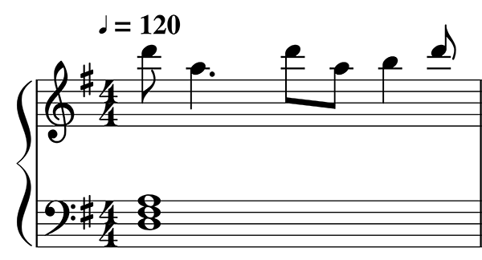
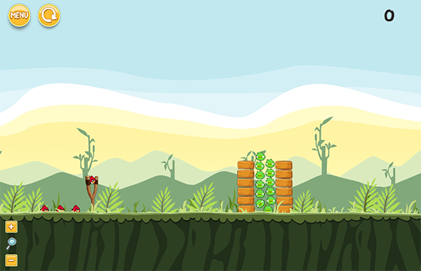

Affective Music Composition with Deep Learning

Deep Learning models have shown very promising results in automatically composing polyphonic music pieces. However, it is very hard to control such models in order to guide the compositions towards a desired goal. In this project, I am interested in controlling deep learning model to automatically generate music with a given sentiment or emotion.
Procedural Level Generation for Physics-based Puzzle Games

Physics-based puzzle games add an extra layer of difficulty to procedural content generation (PCG) because their mechanics are based on “realistic” physics. Thus, evaluating feasibility and quality is harder and typically requires simulations. This project consists of designing PCG methods capable of generating feasible and interesting levels for physics-based puzzle games, such as Angry Birds. To support the experiments in this project, it was implemented an Angry Birds clone, which was coded using the Unity engine and the original art assets. The source code of the clone is available on github.
EXTERNAL LINKS: